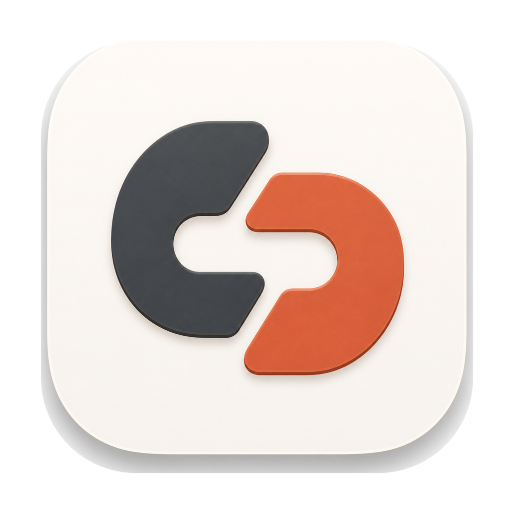

cc-partner×GLMCLI CODING, THE OTHER HALF · 01
CLI Agent 很会写代码，
但真实项目还是会散
用 Claude Code 这类终端 Agent 做真实工程后，我把最常遇到的 7 组痛点，做成了 cc-partner 里的完整开发工作流。
GLM-5.1GLM-5.2GLM-5.3
 真实产品界面 · 演示数据
真实产品界面 · 演示数据
cc-partner×GLM用 Claude Code 这类终端 Agent 做真实工程后，我把最常遇到的 7 组痛点，做成了 cc-partner 里的完整开发工作流。
真实产品界面 · 演示数据每个 Agent 使用独立目录与分支，减少并行执行时互相踩现场；Workbench 负责把它们组织回来。
隔离降低运行时相互污染；改到同一段代码时，合并仍可能冲突。
真实界面 · 演示数据手机进入同一个项目，查看并接手终端、文件、Git 与自动化；需要人的阻塞集中投影。
DECISIONBLOCKEDRUNNINGLAN API 无调用者身份校验，只在可信局域网中使用。
 真实界面 · 演示数据
真实界面 · 演示数据最近使用“完成保存与 Git 状态联动，下一步生成 evidence…”
昨天“断线后按 ring buffer 补历史…”
01tmux attach应用重启后接回原 window / pane02断线 replay事件 Gap 后补回终端历史03⌘K 搜索按标题和对话内容预览、resumeFILES检查真实改动代码、Markdown、HTML 等直接围绕 worktree 打开。GIT确认分支与提交树clean / dirty / conflict 与提交 DAG 同屏。BROWSER执行受控 smoke保存 screenshot、console 错误和断言结果。EVIDENCE证据跟着任务走不是只保留一句“已经完成”。真实界面 · 演示数据验收标准与验证命令已绑定
READY专用 worktree + 可见 Runner
RUNNING验证失败，复用原现场返工
FIX LOOP等待人工决定 commit / merge
DECISION验证 evidence 已归档
VERIFIED用户级、远端设备与项目级指令，按公共 / 适配 / 独有三槽组织。
PUBLIC团队公共约定SYNCEDADAPTERAgent 适配说明READYEXCLUSIVE工具独有规则LOCAL不再从聊天记录里翻找，常用内容有自己的可复用历史。
按 Bug / 性能 / 风格分组，只输出可执行修改建议。
保留标题、正文、标签与版本历史，可跨设备同步。
LAN TRANSFER任意大小分块传输，SHA256 校验；双方能力匹配时断点续传。
REGION CAPTURE全局快捷键框选，矩形/箭头标注、6 色与撤销；确认后 PNG 直进剪贴板。
HEALTH久坐、喝水、全屏休息倒计时，支持免打扰、暂停、延迟与近 7 天习惯统计。
ACTIVITY查看活跃/闲置分钟、应用与窗口排行，以及一天中 24 小时活跃分布。
CLI Agent 负责生成与推理，cc-partner 把工程现场、Agent 资产与开发周边收成一条可见流程。
VISIBLE可见项目、worktree、终端、阻塞与验证状态持续可见。
HANDOFF可接手桌面、远端设备和手机保持同一个项目上下文。
DELIVER可交付文件、Git、浏览器 smoke 与 evidence 一起收口。
local-first · macOS / Windows / Ubuntu
cc-partner 不是 GLM 原生集成，也不提供模型服务。LAN API 无调用者身份校验，只在可信局域网中使用。